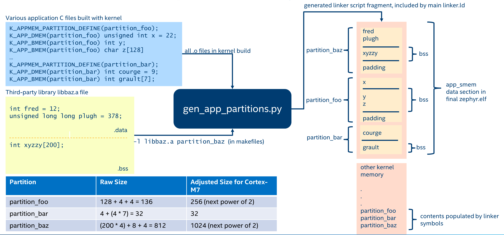

Memory Protection Design
Zephyr’s memory protection design is geared towards microcontrollers with MPU (Memory Protection Unit) hardware. We do support some architectures, such as x86, which have a paged MMU (Memory Management Unit), but in that case the MMU is used like an MPU with an identity page table.
All of the discussion below will be using MPU terminology; systems with MMUs can be considered to have an MPU with an unlimited number of programmable regions.
There are a few different levels on how memory access is configured when Zephyr memory protection features are enabled, which we will describe here:
Boot Time Memory Configuration
This is the configuration of the MPU after the kernel has started up. It should contain the following:
Any configuration of memory regions which need to have special caching or write-back policies for basic hardware and driver function. Note that most MPUs have the concept of a default memory access policy map, which can be enabled as a “background” mapping for any area of memory that doesn’t have an MPU region configuring it. It is strongly recommended to use this to maximize the number of available MPU regions for the end user. On ARMv7-M/ARMv8-M this is called the System Address Map, other CPUs may have similar capabilities. See Memory Attributes for information on how to annotate the system map in the device tree.
A read-only, executable region or regions for program text and ro-data, that is accessible to user mode. This could be further sub-divided into a read-only region for ro-data, and a read-only, executable region for text, but this will require an additional MPU region. This is required so that threads running in user mode can read ro-data and fetch instructions.
Depending on configuration, user-accessible read-write regions to support extra features like GCOV, HEP, etc.
Assuming there is a background map which allows supervisor mode to access any memory it needs, and regions are defined which grant user mode access to text/ro-data, this is sufficient for the boot time configuration.
Hardware Stack Overflow
CONFIG_HW_STACK_PROTECTION is an optional feature which detects stack
buffer overflows when the system is running in supervisor mode. This
catches issues when the entire stack buffer has overflowed, and not
individual stack frames, use compiler-assisted CONFIG_STACK_CANARIES
for that.
Like any crash in supervisor mode, no guarantees can be made about the overall health of the system after a supervisor mode stack overflow, and any instances of this should be treated as a serious error. However it’s still very useful to know when these overflows happen, as without robust detection logic the system will either crash in mysterious ways or behave in an undefined manner when the stack buffer overflows.
Some systems implement this feature by creating at runtime a ‘guard’ MPU region which is set to be read-only and is at either the beginning or immediately preceding the supervisor mode stack buffer. If the stack overflows an exception will be generated.
This feature is optional and is not required to catch stack overflows in user mode; disabling this may free 1-2 MPU regions depending on the MPU design.
Other systems may have dedicated CPU support for catching stack overflows and no extra MPU regions will be required.
Thread Stack
Any thread running in user mode will need access to its own stack buffer. On context switch into a user mode thread, a dedicated MPU region or MMU page table entries will be programmed with the bounds of the stack buffer. A thread exceeding its stack buffer will start pushing data onto memory it doesn’t have access to and a memory access violation exception will be generated.
Note that user threads have access to the stacks of other user threads in
the same memory domain. This is the minimum required for architectures to
support memory domains. Architecture can further restrict access to stacks
so each user thread only has access to its own stack if such architecture
advertises this capability via
CONFIG_ARCH_MEM_DOMAIN_SUPPORTS_ISOLATED_STACKS.
This behavior is enabled by default if supported and can be selectively
disabled via CONFIG_MEM_DOMAIN_ISOLATED_STACKS if
architecture supports both operating modes. However, some architectures
may decide to enable this all the time, and thus this option cannot be
disabled. Regardless of these kconfigs, user threads cannot access
the stacks of other user threads outside of their memory domains.
Thread Resource Pools
A small subset of kernel APIs, invoked as system calls, require heap memory
allocations. This memory is used only by the kernel and is not accessible
directly by user mode. In order to use these system calls, invoking threads
must assign themselves to a resource pool, which is a k_heap
object. Memory is drawn from a thread’s resource pool using
z_thread_malloc() and freed with k_free().
The APIs which use resource pools are as follows, with any alternatives noted for users who do not want heap allocations within their application:
k_stack_alloc_init()sets up a k_stack with its storage buffer allocated out of a resource pool instead of a buffer provided by the user. An alternative is to declare k_stacks that are automatically initialized at boot withK_STACK_DEFINE(), or to initialize the k_stack in supervisor mode withk_stack_init().
k_msgq_alloc_init()sets up a k_msgq object with its storage buffer allocated out of a resource pool instead of a buffer provided by the user. An alternative is to declare a k_msgq that is automatically initialized at boot withK_MSGQ_DEFINE(), or to initialize the k_msgq in supervisor mode withk_msgq_init().
k_poll()when invoked from user mode, needs to make a kernel-side copy of the provided events array while waiting for an event. This copy is freed whenk_poll()returns for any reason.
k_queue_alloc_prepend()andk_queue_alloc_append()allocate a container structure to place the data in, since the internal bookkeeping information that defines the queue cannot be placed in the memory provided by the user.
k_object_alloc()allows for entire kernel objects to be dynamically allocated at runtime and a usable pointer to them returned to the caller.
The relevant API is k_thread_heap_assign() which assigns
a k_heap to draw these allocations from for the target thread.
If the system heap is enabled, then the system heap may be used with
k_thread_system_pool_assign(), but it is preferable for different
logical applications running on the system to have their own pools.
Memory Domains
The kernel ensures that any user thread will have access to its own stack buffer, plus program text and read-only data. The memory domain APIs are the way to grant access to additional blocks of memory to a user thread.
Conceptually, a memory domain is a collection of some number of memory partitions. The maximum number of memory partitions in a domain is limited by the number of available MPU regions. This is why it is important to minimize the number of boot-time MPU regions.
Memory domains are not intended to control access to memory from supervisor mode. In some cases this may be unavoidable; for example some architectures do not allow for the definition of regions which are read-only to user mode but read-write to supervisor mode. A great deal of care must be taken when working with such regions to not unintentionally cause the kernel to crash when accessing such a region. Any attempt to use memory domain APIs to control supervisor mode access is at best undefined behavior; supervisor mode access policy is only intended to be controlled by boot-time memory regions.
Memory domain APIs are only available to supervisor mode. The only control user mode has over memory domains is that any user thread’s child threads will automatically become members of the parent’s domain.
All threads are members of a memory domain, including supervisor threads
(even though this has no implications on their memory access). There is a
default domain k_mem_domain_default which will be assigned to threads if
they have not been specifically assigned to a domain, or inherited a memory
domain membership from their parent thread. The main thread starts as a
member of the default domain.
Memory Partitions
Each memory partition consists of a memory address, a size, and access attributes. It is intended that memory partitions are used to control access to system memory. Defining memory partitions are subject to the following constraints:
The partition must represent a memory region that can be programmed by the underlying memory management hardware, and needs to conform to any underlying hardware constraints. For example, many MPU-based systems require that partitions be sized to some power of two, and aligned to their own size. For MMU-based systems, the partition must be aligned to a page and the size some multiple of the page size.
Partitions within the same memory domain may not overlap each other. There is no notion of precedence among partitions within a memory domain. Partitions within a memory domain are assumed to have a higher precedence than any boot-time memory regions, however whether a memory domain partition can overlap a boot-time memory region is architecture specific.
The same partition may be specified in multiple memory domains. For example there may be a shared memory area that multiple domains grant access to.
Care must be taken in determining what memory to expose in a partition. It is not appropriate to provide direct user mode access to any memory containing private kernel data.
Memory domain partitions are intended to control access to system RAM. Configuration of memory partitions which do not correspond to RAM may not be supported by the architecture; this is true for MMU-based systems.
There are two ways to define memory partitions: either manually or automatically.
Manual Memory Partitions
The following code declares a global array buf, and then declares
a read-write partition for it which may be added to a domain:
uint8_t __aligned(32) buf[32];
K_MEM_PARTITION_DEFINE(my_partition, buf, sizeof(buf),
K_MEM_PARTITION_P_RW_U_RW);
This does not scale particularly well when we are trying to contain multiple objects spread out across several C files into a single partition.
Automatic Memory Partitions
Automatic memory partitions are created by the build system. All globals which need to be placed inside a partition are tagged with their destination partition. The build system will then coalesce all of these into a single contiguous block of memory, zero any BSS variables at boot, and define a memory partition of appropriate base address and size which contains all the tagged data.

Automatic Memory Domain build flow
Automatic memory partitions are only configured as read-write
regions. They are defined with K_APPMEM_PARTITION_DEFINE().
Global variables are then routed to this partition using
K_APP_DMEM() for initialized data and K_APP_BMEM() for
BSS.
#include <zephyr/app_memory/app_memdomain.h>
/* Declare a k_mem_partition "my_partition" that is read-write to
* user mode. Note that we do not specify a base address or size.
*/
K_APPMEM_PARTITION_DEFINE(my_partition);
/* The global variable var1 will be inside the bounds of my_partition
* and be initialized with 37 at boot.
*/
K_APP_DMEM(my_partition) int var1 = 37;
/* The global variable var2 will be inside the bounds of my_partition
* and be zeroed at boot size K_APP_BMEM() was used, indicating a BSS
* variable.
*/
K_APP_BMEM(my_partition) int var2;
The build system will ensure that the base address of my_partition will
be properly aligned, and the total size of the region conforms to the memory
management hardware requirements, adding padding if necessary.
If multiple partitions are being created, a variadic preprocessor macro can be
used as provided in app_macro_support.h:
FOR_EACH(K_APPMEM_PARTITION_DEFINE, part0, part1, part2);
Automatic Partitions for Static Library Globals
The build-time logic for setting up automatic memory partitions is in
scripts/build/gen_app_partitions.py. If a static library is linked into Zephyr,
it is possible to route all the globals in that library to a specific
memory partition with the --library argument.
For example, if the Newlib C library is enabled, the Newlib globals all need
to be placed in z_libc_partition. The invocation of the script in the
top-level CMakeLists.txt adds the following:
gen_app_partitions.py ... --library libc.a z_libc_partition ..
For pre-compiled libraries there is no support for expressing this in the
project-level configuration or build files; the toplevel CMakeLists.txt must
be edited.
For Zephyr libraries created using zephyr_library or zephyr_library_named
the zephyr_library_app_memory function can be used to specify the memory
partition where all globals in the library should be placed.
Pre-defined Memory Partitions
There are a few memory partitions which are pre-defined by the system:
z_malloc_partition- This partition contains the system-wide pool of memory used by libc malloc(). Due to possible starvation issues, it is not recommended to draw heap memory from a global pool, instead it is better to define various sys_heap objects and assign them to specific memory domains.
z_libc_partition- Contains globals required by the C library and runtime. Required when using either the Minimal C library or the Newlib C Library. Required whenCONFIG_STACK_CANARIESis enabled.
Library-specific partitions are listed in include/zephyr/app_memory/partitions.h.
For example, to use the MBEDTLS library from user mode, the
k_mbedtls_partition must be added to the domain.
Memory Domain Usage
Create a Memory Domain
A memory domain is defined using a variable of type
k_mem_domain. It must then be initialized by calling
k_mem_domain_init().
The following code defines and initializes an empty memory domain.
struct k_mem_domain app0_domain;
k_mem_domain_init(&app0_domain, 0, NULL);
Add Memory Partitions into a Memory Domain
There are two ways to add memory partitions into a memory domain.
This first code sample shows how to add memory partitions while creating a memory domain.
/* the start address of the MPU region needs to align with its size */
uint8_t __aligned(32) app0_buf[32];
uint8_t __aligned(32) app1_buf[32];
K_MEM_PARTITION_DEFINE(app0_part0, app0_buf, sizeof(app0_buf),
K_MEM_PARTITION_P_RW_U_RW);
K_MEM_PARTITION_DEFINE(app0_part1, app1_buf, sizeof(app1_buf),
K_MEM_PARTITION_P_RW_U_RO);
struct k_mem_partition *app0_parts[] = {
app0_part0,
app0_part1
};
k_mem_domain_init(&app0_domain, ARRAY_SIZE(app0_parts), app0_parts);
This second code sample shows how to add memory partitions into an initialized memory domain one by one.
/* the start address of the MPU region needs to align with its size */
uint8_t __aligned(32) app0_buf[32];
uint8_t __aligned(32) app1_buf[32];
K_MEM_PARTITION_DEFINE(app0_part0, app0_buf, sizeof(app0_buf),
K_MEM_PARTITION_P_RW_U_RW);
K_MEM_PARTITION_DEFINE(app0_part1, app1_buf, sizeof(app1_buf),
K_MEM_PARTITION_P_RW_U_RO);
k_mem_domain_add_partition(&app0_domain, &app0_part0);
k_mem_domain_add_partition(&app0_domain, &app0_part1);
Note
The maximum number of memory partitions is limited by the maximum number of MPU regions or the maximum number of MMU tables.
Memory Domain Assignment
Any thread may join a memory domain, and any memory domain may have multiple threads assigned to it. Threads are assigned to memory domains with an API call:
k_mem_domain_add_thread(&app0_domain, app_thread_id);
If the thread was already a member of some other domain (including the default domain), it will be removed from it in favor of the new one.
In addition, if a thread is a member of a memory domain, and it creates a child thread, that thread will belong to the domain as well.
Remove a Memory Partition from a Memory Domain
The following code shows how to remove a memory partition from a memory domain.
k_mem_domain_remove_partition(&app0_domain, &app0_part1);
The k_mem_domain_remove_partition() API finds the memory partition that matches the given parameter and removes that partition from the memory domain.
Available Partition Attributes
When defining a partition, we need to set access permission attributes to the partition. Since the access control of memory partitions relies on either an MPU or MMU, the available partition attributes would be architecture dependent.
The complete list of available partition attributes for a specific architecture
is found in the architecture-specific include file
include/zephyr/arch/<arch name>/arch.h, (for example, include/zephyr/arch/arm/arch.h.)
Some examples of partition attributes are:
/* Denote partition is privileged read/write, unprivileged read/write */
K_MEM_PARTITION_P_RW_U_RW
/* Denote partition is privileged read/write, unprivileged read-only */
K_MEM_PARTITION_P_RW_U_RO
In almost all cases K_MEM_PARTITION_P_RW_U_RW is the right choice.
Configuration Options
Related configuration options:
API Reference
The following memory domain APIs are provided by include/zephyr/kernel.h: